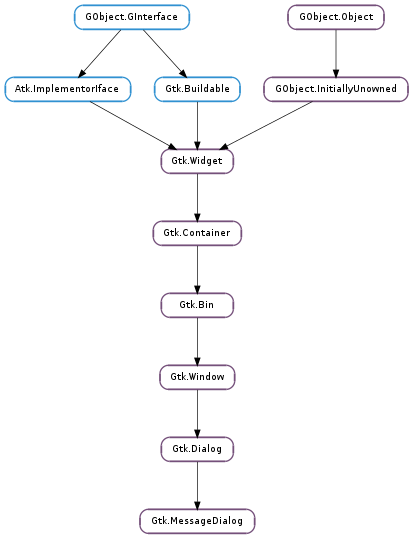

| Subclasses: | Anjuta.SavePrompt |
|---|
| format_secondary_markup(message_format) | |
| format_secondary_text(message_format) | |
| get_image() | |
| get_message_area() | |
| set_image(image) | |
| set_markup(str) |
| Name | Type | Flags | Description |
|---|---|---|---|
| buttons | Gtk.ButtonsType | w/c | The buttons shown in the message dialog |
| image | Gtk.Widget | r/w | The image |
| message-area | Gtk.Widget | r | Gtk.VBox that holds the dialog’s primary and secondary labels |
| message-type | Gtk.MessageType | r/w | The type of message |
| secondary-text | str | r/w | The secondary text of the message dialog |
| secondary-use-markup | bool | r/w | The secondary text includes Pango markup. |
| text | str | r/w | The primary text of the message dialog |
| use-markup | bool | r/w | The primary text of the title includes Pango markup. |
None
| Name | Type | Access |
|---|---|---|
| parent_instance | Gtk.Dialog | r |
Bases: Gtk.Dialog
Gtk.MessageDialog presents a dialog with an image representing the type of message (Error, Question, etc.) alongside some message text. It’s simply a convenience widget; you could construct the equivalent of Gtk.MessageDialog from Gtk.Dialog without too much effort, but Gtk.MessageDialog saves typing.
One difference from Gtk.Dialog is that Gtk.MessageDialog sets the Gtk.Window :skip-taskbar-hint property to True, so that the dialog is hidden from the taskbar by default.
The easiest way to do a modal message dialog is to use Gtk.Dialog.run (), though you can also pass in the Gtk.DialogFlags.MODAL flag, Gtk.Dialog.run () automatically makes the dialog modal and waits for the user to respond to it. Gtk.Dialog.run () returns when any dialog button is clicked.
A modal dialog.
dialog = gtk_message_dialog_new (main_application_window,
GTK_DIALOG_DESTROY_WITH_PARENT,
GTK_MESSAGE_ERROR,
GTK_BUTTONS_CLOSE,
"Error loading file '&percnts': &percnts",
filename, g_strerror (errno));
gtk_dialog_run (GTK_DIALOG (dialog));
gtk_widget_destroy (dialog);
You might do a non-modal Gtk.MessageDialog as follows:
A non-modal dialog.
dialog = gtk_message_dialog_new (main_application_window,
GTK_DIALOG_DESTROY_WITH_PARENT,
GTK_MESSAGE_ERROR,
GTK_BUTTONS_CLOSE,
"Error loading file '&percnts': &percnts",
filename, g_strerror (errno));
/&ast Destroy the dialog when the user responds to it (e.g. clicks a button) &ast/
g_signal_connect_swapped (dialog, "response",
G_CALLBACK (gtk_widget_destroy),
dialog);
Gtk.MessageDialog as Gtk.Buildable
The Gtk.MessageDialog implementation of the Gtk.Buildable interface exposes the message area as an internal child with the name “message_area”.
Sets the secondary text of the message dialog to be message_format (with printf()-style), which is marked up with the Pango text markup language.
Due to an oversight, this function does not escape special XML characters like Gtk.MessageDialog.new_with_markup () does. Thus, if the arguments may contain special XML characters, you should use GLib.markup_printf_escaped () to escape it.
gchar *msg;
msg = g_markup_printf_escaped (message_format, ...);
gtk_message_dialog_format_secondary_markup (message_dialog, "&percnts", msg);
g_free (msg);
Sets the secondary text of the message dialog to be message_format (with printf()-style).
| Returns: | the dialog’s image |
|---|---|
| Return type: | Gtk.Widget |
Gets the dialog’s image.
| Returns: | A Gtk.VBox corresponding to the “message area” in the message_dialog. |
|---|---|
| Return type: | Gtk.Widget |
Returns the message area of the dialog. This is the box where the dialog’s primary and secondary labels are packed. You can add your own extra content to that box and it will appear below those labels, on the right side of the dialog’s image (or on the left for right-to-left languages). See Gtk.Dialog.get_content_area () for the corresponding function in the parent Gtk.Dialog.
| Parameters: | image (Gtk.Widget) – the image |
|---|
Sets the dialog’s image to image.